Reporte MIDAGRI
Objetivo: Se realizará una exploración de la base de datos del MIDAGRI. Luego se exportará la base de datos que solo incluya los sembríos de espárrago, palto, maíz, caña de azúcar y papa.
Importar data
Layers disponibles en la carpeta QLAB_MIDAGRI_1.gdb:
Driver: OpenFileGDB
Available layers:
layer_name geometry_type features fields crs_name
1 ParcelaSMI Multi Polygon 6043 20 WGS 84
2 ParcelaSM Multi Polygon 6088 20 WGS 84
3 LoteSM Multi Polygon 14864 25 WGS 84
4 CentroPoblado Multi Polygon 352 5 WGS 84
5 CoberturaA Multi Polygon 314 22 WGS 84
6 Distritos Multi Polygon 83 8 WGS 84
7 PisosA Multi Polygon 268 14 WGS 84
8 Hidrografia Multi Line String 6556 5 WGS 84
9 Vias Multi Line String 28711 3 WGS 84
10 SectorEsMMA Multi Polygon 315 28 WGS 84
11 Provincias Multi Polygon 12 7 WGS 84
12 Regiones Multi Polygon 1 5 WGS 84
13 SedeA Point 17 31 WGS 84
14 MARCOAREA_LA_LIBERTAD_ac Multi Polygon 1233 41 WGS 84 / UTM zone 18S
15 MARCOLISTAEMPRESA_LA_LIBERTAD_ac 3D Measured Multi Polygon 155 31 WGS 84 / UTM zone 18S
16 MARCOLISTAENCUESTA_LA_LIBERTAD 3D Measured Multi Polygon 411 33 WGS 84 / UTM zone 18S
17 MARCOLISTAUSO_LA_LIBERTAD 3D Measured Multi Polygon 1226 35 WGS 84 / UTM zone 18SPlot Layers
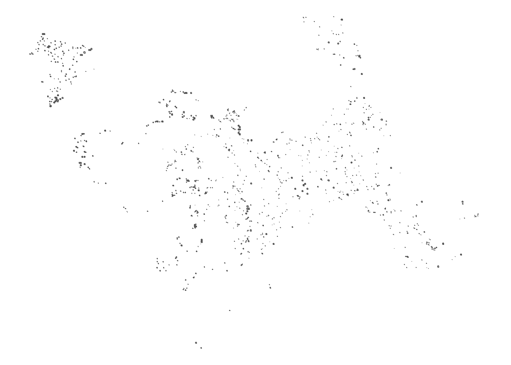
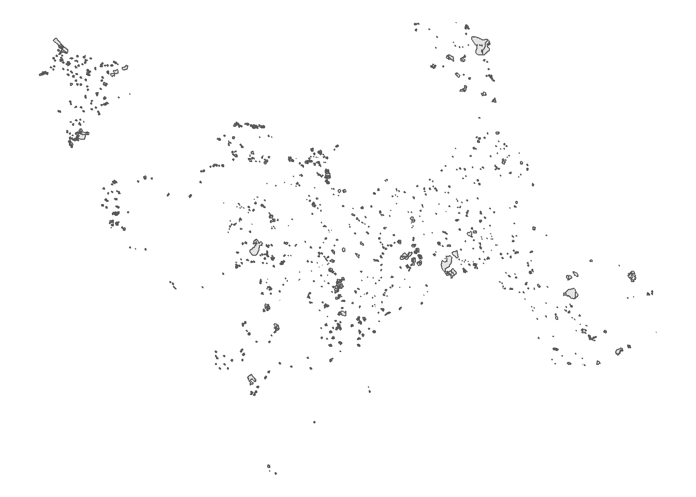
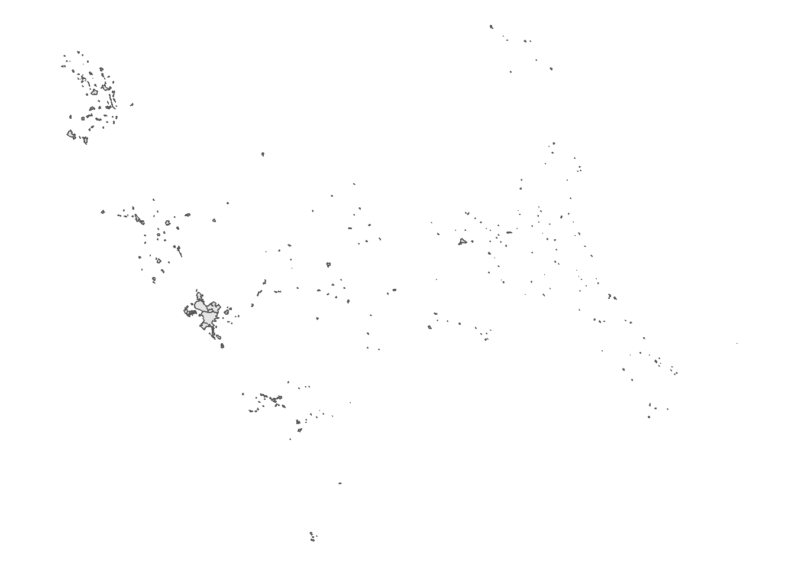
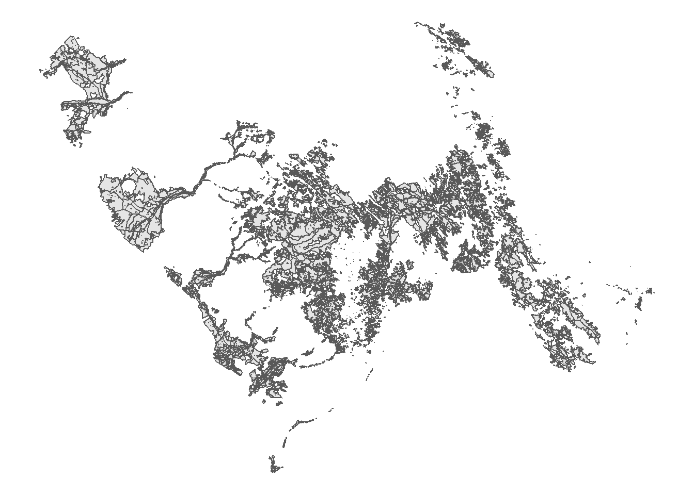
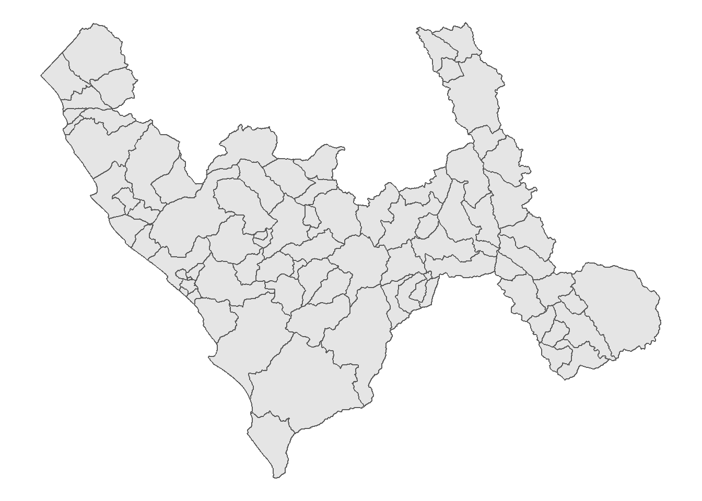
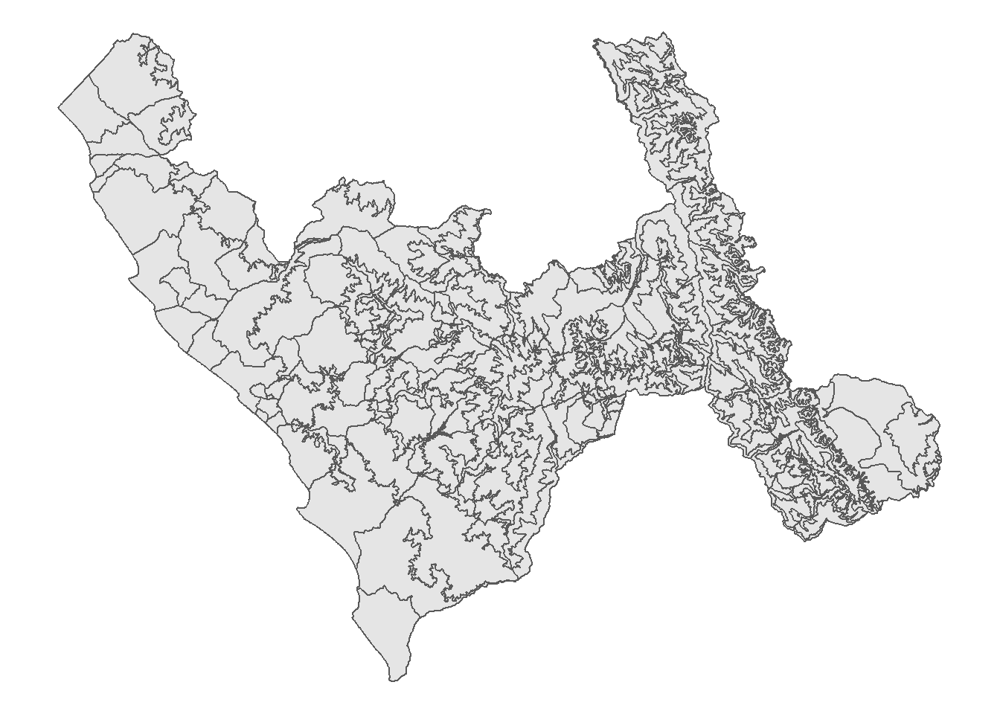
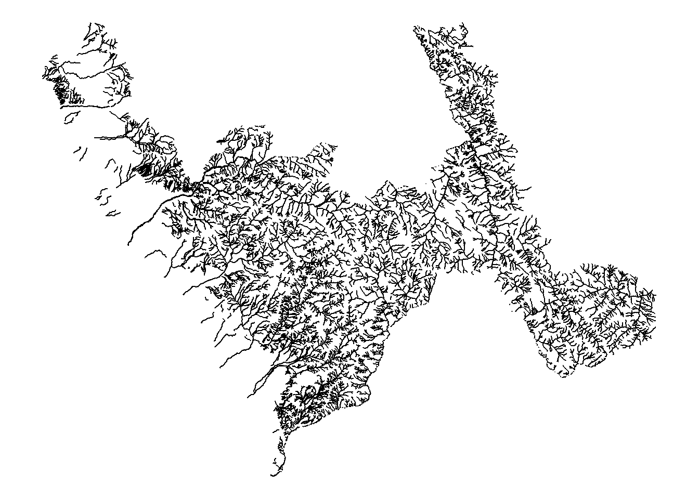
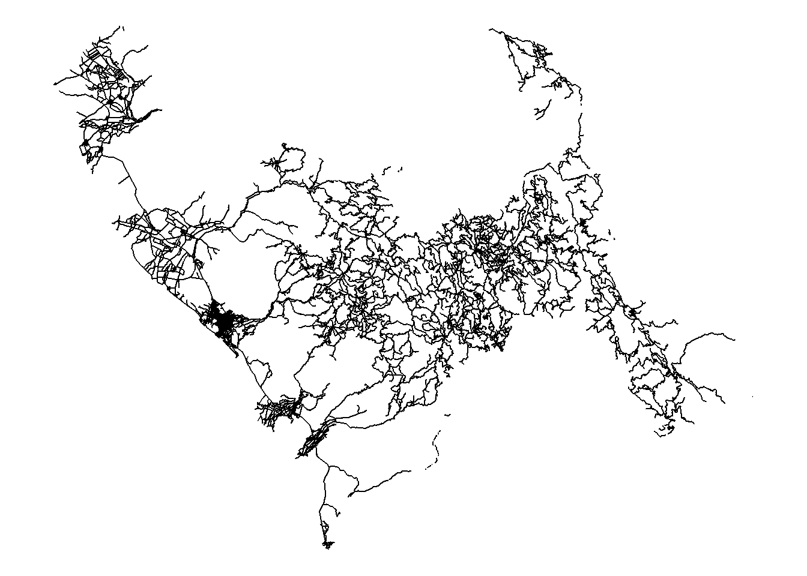
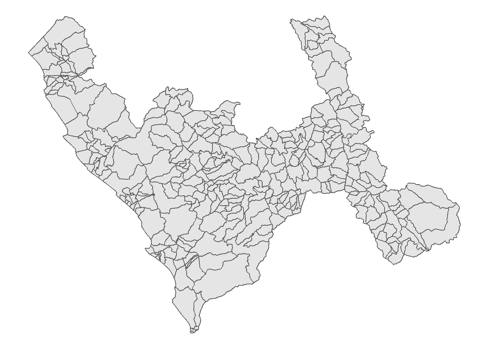
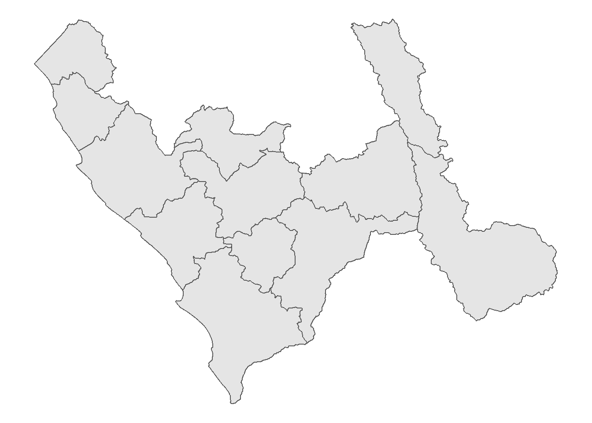
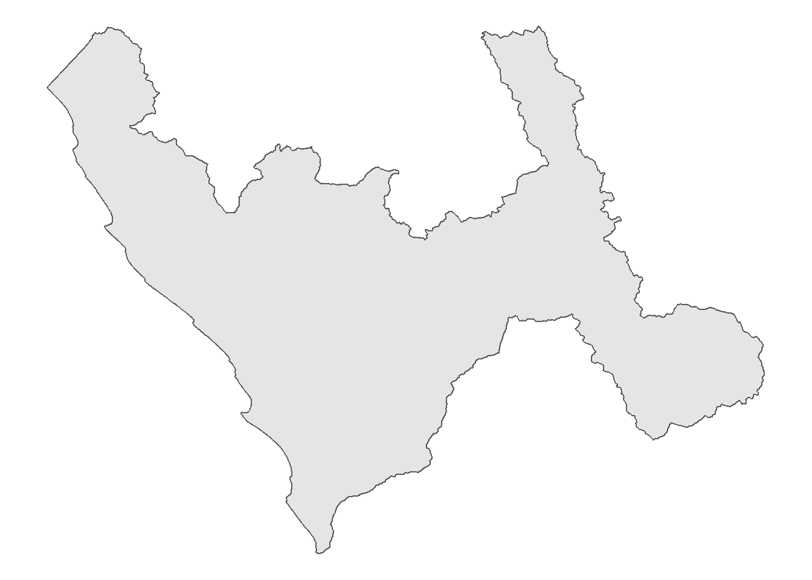
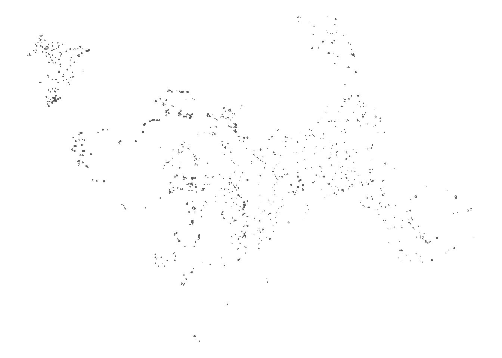
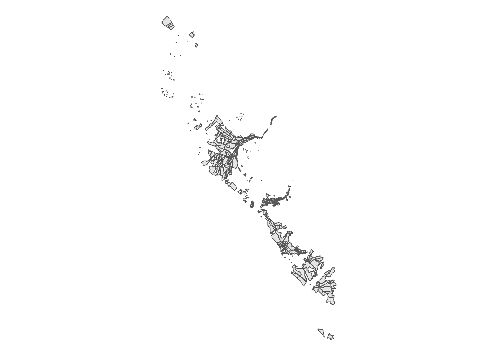
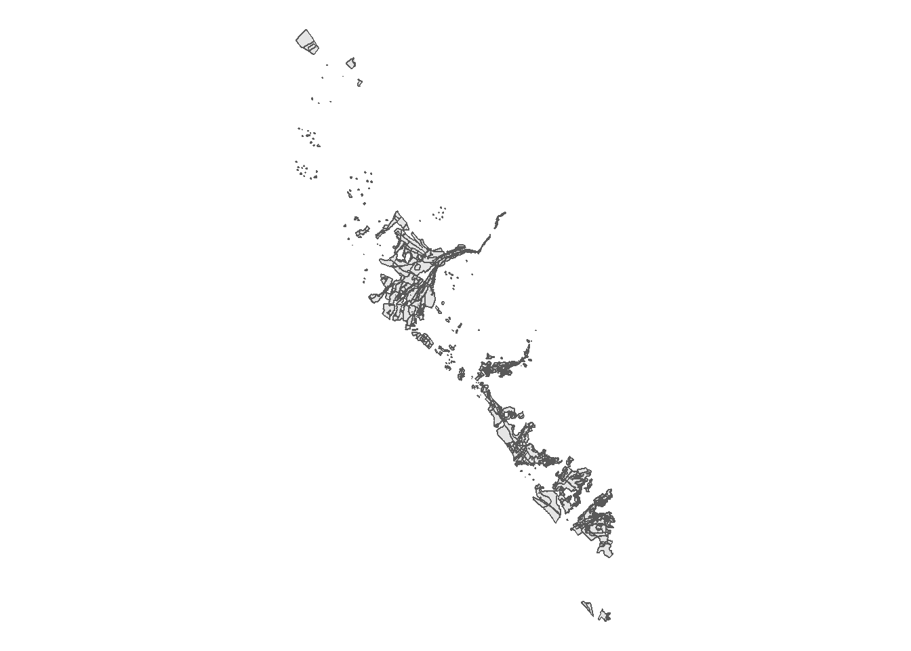
QLAB_MIDAGRI_1.gdbCálculo de área por cultivo.
Para realizar este cálculo necesitamos el layer LoteSM:
| GEOCODIGO | IDDPTO | IDPROV | IDDIST | SEGMENTO | AREA_HA | NRO_SM | TIPO_MARCO | NRO_DIVISION | COD_CUEST | CONSULTOR | NOMBDEP | NOMBPROV | NOMBDIST | NRO_PARCELA | ID_PARCELA | NRO_LOTE | ID_LOTE | AREA_LOTE | USO_LOTE | COBERTURA_LOTE | SHAPE_Length | SHAPE_Area | x | Y | SHAPE |
|---|---|---|---|---|---|---|---|---|---|---|---|---|---|---|---|---|---|---|---|---|---|---|---|---|---|
| 131201110101400261190 | 13 | 1312 | 131201 | 00261190 | 16 | 02189 | 1 | 4 | 130218914 | RVJL | LA LIBERTAD | VIRU | VIRU | 06 | 13021891406 | 03 | 1302189140603 | 4.4224590 | 60 | NA | 0.0107058 | 3.6e-06 | -78.81172 | -8.453951 | MULTIPOLYGON (((-78.81166 -... |
| 131201110101400261190 | 13 | 1312 | 131201 | 00261190 | 16 | 02189 | 1 | 4 | 130218914 | RVJL | LA LIBERTAD | VIRU | VIRU | 06 | 13021891406 | 07 | 1302189140607 | 0.8332049 | 95 | NA | 0.0035534 | 7.0e-07 | -78.81171 | -8.456186 | MULTIPOLYGON (((-78.81115 -... |
| 131201110101400261190 | 13 | 1312 | 131201 | 00261190 | 16 | 02189 | 1 | 4 | 130218914 | RVJL | LA LIBERTAD | VIRU | VIRU | 06 | 13021891406 | 01 | 1302189140601 | 1.1101161 | 41 | NA | 0.0041080 | 9.0e-07 | -78.81245 | -8.455418 | MULTIPOLYGON (((-78.81196 -... |
| 131201110101400261190 | 13 | 1312 | 131201 | 00261190 | 16 | 02189 | 1 | 4 | 130218914 | RVJL | LA LIBERTAD | VIRU | VIRU | 06 | 13021891406 | 04 | 1302189140604 | 0.8044634 | 71 | NA | 0.0037099 | 7.0e-07 | -78.81264 | -8.456017 | MULTIPOLYGON (((-78.81218 -... |
| 131201110101400262419 | 13 | 1312 | 131201 | 00262419 | 16 | 02190 | 1 | 1 | 130219011 | RVJL | LA LIBERTAD | VIRU | VIRU | 05 | 13021901105 | 01 | 1302190110501 | 4.9824818 | 26 | NA | 0.0078129 | 4.1e-06 | -78.84331 | -8.473901 | MULTIPOLYGON (((-78.84299 -... |
En particular las variables:
NOMPROV: Nombre de la provinciaUSO_LOTE: Tipo de uso y cobertura de la tierra (papa, palta, pastos cultivados y otros usos que no sean cultivos (infraestructuras, cuerpos de agua, eriazos, formaciones rocosas etc…), P_301a. 100 Opciones. Selección única.AREA_LOTE: Área del Lote en hectáreas (Calcular en Zona 18).
DICCIONARIO_MMM_18_11_2021.xlsx
| Variable | Categorías |
|---|---|
| CULTIVO_LOTE | 1. kiwicha, o amaranto 2. Aji 3. Ajo 4. Alcachofa 5. Alfalfa 6. Algodon 7. Arandanos 8. Arroz 9. Arverja 10. Avena 11. Banano 12. Cacao 13. Cafe 14. Camerun 15. Camote 16. Capuli 17. Cebada 18. Cebolla 19. Cerezo 20. Chia (Salvia Hispanica) 21. Chiromoya 22. Chocho o Tarwi 23. Ciruelo 24. Col o repollo 25. Culantro 26. Esparrago 27. Frijol 28. Garbanzo 29. Granadilla 30. Granado 31. Guanabano 32. Guayabo 33. Haba 34. Higuera 35. Lechuga 36. Lenteja 37. Lima 38. Limon 39. Linaza 40. Lucuma 41. Maíz 42. Mamey 43. Mandarina 44. Mango 45. Mani 46. Manzano 47. Maracuya 48. Marigold 49. Mashua o izano 50. Melocotonero 51. Melon 52. Membrillo 53. Naranjo 54. Ñuña 55. Oca 56. Olivo 57. Olluco 58. Pacae o guabo 59. Pallar 60. Palto 61. Papa 62. Papikra 63. Otros Pastos Cultivados 64. Pecano 65. Pepinillo 66. Pepino 67. Pimiento 68. Piña 69. Piquillo 70. Pitahaya 71. Platano 72. Quinua 73. Rabano 74. Sandia 75. Sorgo 76. Tara 77. Tomate 78. Trigo 79. Tumbo 80. Tuna 81. Vid 82. Yuca 83. Zanahoria 84. Zapallo 85. Zarandaja 86. Caña de azucar 87. Cuerpos de agua 88. Cultivos Ilícitos 89. Eriazos 90. Infraestructura Agrícola 91. Inraestructura Pecuaria 92. Montes y Bosques 93. Otros Cultivos Permanentes 94. Otros Cultivos Transitorios 95. Otros Usos de la Tierra 96. Plantaciones Forestales 97. Tierras con Pastos Naturales 98. Tierras en Barbecho. 99. Tierras en descanso 100. Vergel |
Tabulación cruzada por sembrío:
| uso_lote1 | Área lote total (Ha) |
|---|---|
| Tierras con Pastos Naturales | 47241.87 |
| Eriazos | 14653.14 |
| Tierras en descanso | 9131.90 |
| Otros Usos de la Tierra | 6646.37 |
| Montes y Bosques | 6510.93 |
| Tierras en Barbecho. | 3303.08 |
| Cuerpos de agua | 1744.65 |
| Inraestructura Pecuaria | 1395.30 |
| Plantaciones Forestales | 1258.72 |
| Tara | 1239.35 |
| Esparrago | 1025.66 |
| Palto | 829.43 |
| Maíz | 808.95 |
| Caña de azucar | 769.26 |
| Arroz | 663.39 |
| Pimiento | 510.85 |
| Papa | 474.37 |
| Otros Pastos Cultivados | 321.86 |
| Otros Cultivos Permanentes | 154.45 |
| Alfalfa | 148.19 |
| Vid | 147.82 |
| Frijol | 116.33 |
| Quinua | 111.37 |
| Mango | 111.26 |
| Cultivos Ilícitos | 97.66 |
| Maracuya | 82.87 |
| Cebolla | 82.05 |
| Chocho o Tarwi | 76.29 |
| Vergel | 75.69 |
| Infraestructura Agrícola | 75.15 |
| Oca | 57.93 |
| Otros Cultivos Transitorios | 57.81 |
| Yuca | 43.50 |
| Cebada | 41.32 |
| Lima | 40.46 |
| Arverja | 40.39 |
| Trigo | 37.87 |
| Olluco | 36.05 |
| Piña | 35.12 |
| Avena | 33.26 |
| Platano | 32.59 |
| Zapallo | 31.97 |
| Naranjo | 28.83 |
| Mandarina | 25.11 |
| Banano | 21.95 |
| Manzano | 17.89 |
| Sandia | 17.86 |
| Aji | 16.85 |
| Limon | 16.59 |
| Garbanzo | 15.32 |
| Chia (Salvia Hispanica) | 14.52 |
| Alcachofa | 13.18 |
| Zarandaja | 12.75 |
| Lucuma | 10.63 |
| Lechuga | 10.43 |
| Pepinillo | 8.84 |
| Camote | 7.88 |
| Lenteja | 7.09 |
| Pepino | 7.06 |
| Tomate | 5.37 |
| Linaza | 4.27 |
| Pitahaya | 3.69 |
| Pallar | 3.61 |
| Membrillo | 3.49 |
| Cafe | 3.44 |
| Ciruelo | 3.35 |
| Zanahoria | 3.24 |
| Haba | 3.15 |
| Culantro | 3.14 |
| Mani | 3.08 |
| Cacao | 2.72 |
| Granadilla | 2.62 |
| Ajo | 2.28 |
| Tumbo | 2.11 |
| Col o repollo | 2.08 |
| Chiromoya | 1.96 |
| Melocotonero | 1.95 |
| No asignado | 1.27 |
| Pacae o guabo | 1.06 |
| Arandanos | 1.02 |
| kiwicha, o amaranto | 0.75 |
| Papikra | 0.74 |
| Mashua o izano | 0.03 |
Tabulación cruzada por sembrío según provincia de La Libertad:
| NOMBPROV | uso_lote1 | Área lote total (Ha) |
|---|---|---|
| ASCOPE | Tierras en descanso | 745.06 |
| ASCOPE | Esparrago | 576.79 |
| ASCOPE | Caña de azucar | 348.47 |
| ASCOPE | Tierras en Barbecho. | 170.35 |
| ASCOPE | Maíz | 147.68 |
| ASCOPE | Otros Usos de la Tierra | 134.35 |
| ASCOPE | Eriazos | 115.66 |
| ASCOPE | Cuerpos de agua | 71.05 |
| ASCOPE | Palto | 63.09 |
| ASCOPE | Montes y Bosques | 30.97 |
| ASCOPE | Alfalfa | 24.12 |
| ASCOPE | Vid | 14.66 |
| ASCOPE | Garbanzo | 13.09 |
| ASCOPE | Platano | 8.84 |
| ASCOPE | Infraestructura Agrícola | 8.05 |
| ASCOPE | Arroz | 6.76 |
| ASCOPE | Zapallo | 4.15 |
| ASCOPE | Inraestructura Pecuaria | 2.88 |
| ASCOPE | Maracuya | 2.58 |
| ASCOPE | Zarandaja | 2.10 |
| ASCOPE | Lucuma | 1.83 |
| ASCOPE | Lenteja | 1.48 |
| ASCOPE | Tomate | 1.09 |
| ASCOPE | Vergel | 0.59 |
| ASCOPE | Cebolla | 0.23 |
| ASCOPE | Camote | 0.15 |
| BOLIVAR | Tierras con Pastos Naturales | 5805.88 |
| BOLIVAR | Eriazos | 2609.88 |
| BOLIVAR | Montes y Bosques | 862.56 |
| BOLIVAR | Cuerpos de agua | 320.64 |
| BOLIVAR | Tierras en descanso | 162.54 |
| BOLIVAR | Otros Pastos Cultivados | 120.38 |
| BOLIVAR | Otros Usos de la Tierra | 83.70 |
| BOLIVAR | Maíz | 33.43 |
| BOLIVAR | Papa | 31.31 |
| BOLIVAR | Mango | 21.06 |
| BOLIVAR | Plantaciones Forestales | 14.35 |
| BOLIVAR | Tierras en Barbecho. | 12.02 |
| BOLIVAR | Palto | 9.60 |
| BOLIVAR | Platano | 4.73 |
| BOLIVAR | Otros Cultivos Permanentes | 3.35 |
| BOLIVAR | Mani | 3.08 |
| BOLIVAR | Cultivos Ilícitos | 2.90 |
| BOLIVAR | Cacao | 2.72 |
| BOLIVAR | Yuca | 2.24 |
| BOLIVAR | Oca | 2.04 |
| BOLIVAR | Naranjo | 1.90 |
| BOLIVAR | Caña de azucar | 1.27 |
| BOLIVAR | Limon | 1.14 |
| BOLIVAR | Quinua | 0.92 |
| BOLIVAR | Frijol | 0.66 |
| BOLIVAR | Inraestructura Pecuaria | 0.15 |
| BOLIVAR | Arverja | 0.14 |
| BOLIVAR | Alfalfa | 0.05 |
| BOLIVAR | Infraestructura Agrícola | 0.02 |
| CHEPEN | Tierras en descanso | 2596.38 |
| CHEPEN | Eriazos | 2100.19 |
| CHEPEN | Tierras en Barbecho. | 794.91 |
| CHEPEN | Otros Usos de la Tierra | 269.82 |
| CHEPEN | Arroz | 268.53 |
| CHEPEN | Palto | 187.25 |
| CHEPEN | Cuerpos de agua | 185.30 |
| CHEPEN | Maíz | 180.40 |
| CHEPEN | Montes y Bosques | 155.26 |
| CHEPEN | Caña de azucar | 150.08 |
| CHEPEN | Esparrago | 139.15 |
| CHEPEN | Inraestructura Pecuaria | 78.82 |
| CHEPEN | Frijol | 63.95 |
| CHEPEN | Mango | 51.99 |
| CHEPEN | Vid | 51.50 |
| CHEPEN | Alfalfa | 45.28 |
| CHEPEN | Cebolla | 32.90 |
| CHEPEN | Maracuya | 24.32 |
| CHEPEN | Plantaciones Forestales | 21.25 |
| CHEPEN | Mandarina | 20.41 |
| CHEPEN | Banano | 20.33 |
| CHEPEN | Otros Cultivos Permanentes | 16.30 |
| CHEPEN | Zarandaja | 10.65 |
| CHEPEN | Sandia | 10.47 |
| CHEPEN | Infraestructura Agrícola | 7.62 |
| CHEPEN | Lechuga | 7.37 |
| CHEPEN | Tara | 6.40 |
| CHEPEN | Aji | 5.03 |
| CHEPEN | Vergel | 4.94 |
| CHEPEN | Yuca | 3.35 |
| CHEPEN | Tomate | 3.09 |
| CHEPEN | Otros Pastos Cultivados | 2.78 |
| CHEPEN | Camote | 2.66 |
| CHEPEN | Tumbo | 2.11 |
| CHEPEN | Naranjo | 1.50 |
| CHEPEN | Lima | 1.40 |
| CHEPEN | Lenteja | 1.17 |
| CHEPEN | Pepinillo | 1.16 |
| CHEPEN | Pitahaya | 1.13 |
| CHEPEN | Otros Cultivos Transitorios | 1.12 |
| CHEPEN | Pimiento | 1.11 |
| CHEPEN | Culantro | 0.41 |
| GRAN CHIMU | Eriazos | 3031.26 |
| GRAN CHIMU | Montes y Bosques | 1583.58 |
| GRAN CHIMU | Tierras con Pastos Naturales | 1187.54 |
| GRAN CHIMU | Otros Usos de la Tierra | 582.46 |
| GRAN CHIMU | Cuerpos de agua | 280.28 |
| GRAN CHIMU | Tierras en Barbecho. | 132.40 |
| GRAN CHIMU | Palto | 130.67 |
| GRAN CHIMU | Tierras en descanso | 120.39 |
| GRAN CHIMU | Plantaciones Forestales | 119.56 |
| GRAN CHIMU | Vid | 81.67 |
| GRAN CHIMU | Cultivos Ilícitos | 56.46 |
| GRAN CHIMU | Maíz | 41.94 |
| GRAN CHIMU | Papa | 33.90 |
| GRAN CHIMU | Arroz | 30.65 |
| GRAN CHIMU | Otros Pastos Cultivados | 29.56 |
| GRAN CHIMU | Otros Cultivos Transitorios | 15.33 |
| GRAN CHIMU | Frijol | 10.38 |
| GRAN CHIMU | Manzano | 7.71 |
| GRAN CHIMU | Inraestructura Pecuaria | 7.29 |
| GRAN CHIMU | Maracuya | 5.99 |
| GRAN CHIMU | Arverja | 4.94 |
| GRAN CHIMU | Trigo | 4.42 |
| GRAN CHIMU | Yuca | 4.35 |
| GRAN CHIMU | Otros Cultivos Permanentes | 4.29 |
| GRAN CHIMU | Aji | 4.23 |
| GRAN CHIMU | Naranjo | 3.48 |
| GRAN CHIMU | Lima | 3.39 |
| GRAN CHIMU | Vergel | 2.70 |
| GRAN CHIMU | Chiromoya | 1.96 |
| GRAN CHIMU | Melocotonero | 1.95 |
| GRAN CHIMU | Mango | 1.89 |
| GRAN CHIMU | Olluco | 1.53 |
| GRAN CHIMU | Cafe | 1.47 |
| GRAN CHIMU | Chocho o Tarwi | 1.38 |
| GRAN CHIMU | Banano | 1.25 |
| GRAN CHIMU | Cebada | 1.22 |
| GRAN CHIMU | Ciruelo | 1.07 |
| GRAN CHIMU | Pacae o guabo | 1.06 |
| GRAN CHIMU | Oca | 0.98 |
| GRAN CHIMU | Lenteja | 0.88 |
| GRAN CHIMU | Alfalfa | 0.83 |
| GRAN CHIMU | Pitahaya | 0.67 |
| GRAN CHIMU | Col o repollo | 0.62 |
| GRAN CHIMU | Granadilla | 0.57 |
| GRAN CHIMU | Cebolla | 0.26 |
| GRAN CHIMU | Tara | 0.20 |
| GRAN CHIMU | Haba | 0.12 |
| JULCAN | Tierras con Pastos Naturales | 3716.01 |
| JULCAN | Eriazos | 743.38 |
| JULCAN | Tierras en descanso | 202.37 |
| JULCAN | Tierras en Barbecho. | 154.05 |
| JULCAN | Otros Usos de la Tierra | 98.30 |
| JULCAN | Plantaciones Forestales | 49.01 |
| JULCAN | Papa | 44.11 |
| JULCAN | Montes y Bosques | 33.64 |
| JULCAN | Cuerpos de agua | 28.81 |
| JULCAN | Inraestructura Pecuaria | 22.20 |
| JULCAN | Alfalfa | 15.35 |
| JULCAN | Chocho o Tarwi | 14.71 |
| JULCAN | Cebada | 10.85 |
| JULCAN | Otros Pastos Cultivados | 2.53 |
| JULCAN | Avena | 2.47 |
| JULCAN | Trigo | 2.42 |
| JULCAN | Infraestructura Agrícola | 2.00 |
| JULCAN | Palto | 1.66 |
| JULCAN | Maíz | 0.76 |
| JULCAN | Oca | 0.65 |
| JULCAN | Otros Cultivos Transitorios | 0.44 |
| JULCAN | Arverja | 0.42 |
| JULCAN | Olluco | 0.35 |
| JULCAN | Haba | 0.34 |
| OTUZCO | Tierras con Pastos Naturales | 1618.60 |
| OTUZCO | Montes y Bosques | 570.67 |
| OTUZCO | Eriazos | 317.97 |
| OTUZCO | Otros Usos de la Tierra | 226.37 |
| OTUZCO | Tierras en Barbecho. | 192.45 |
| OTUZCO | Tierras en descanso | 170.52 |
| OTUZCO | Papa | 91.03 |
| OTUZCO | Plantaciones Forestales | 83.69 |
| OTUZCO | Cuerpos de agua | 76.00 |
| OTUZCO | Inraestructura Pecuaria | 66.57 |
| OTUZCO | Palto | 65.24 |
| OTUZCO | Maíz | 28.40 |
| OTUZCO | Oca | 23.59 |
| OTUZCO | Otros Cultivos Permanentes | 20.47 |
| OTUZCO | Chocho o Tarwi | 18.57 |
| OTUZCO | Avena | 17.28 |
| OTUZCO | Olluco | 15.84 |
| OTUZCO | Frijol | 15.77 |
| OTUZCO | Lima | 12.32 |
| OTUZCO | Naranjo | 12.06 |
| OTUZCO | Otros Cultivos Transitorios | 9.97 |
| OTUZCO | Zapallo | 9.34 |
| OTUZCO | Platano | 8.09 |
| OTUZCO | Piña | 6.43 |
| OTUZCO | Cebada | 5.15 |
| OTUZCO | Yuca | 4.51 |
| OTUZCO | Arverja | 4.25 |
| OTUZCO | Lucuma | 4.22 |
| OTUZCO | Manzano | 3.99 |
| OTUZCO | Membrillo | 3.49 |
| OTUZCO | Otros Pastos Cultivados | 2.76 |
| OTUZCO | Limon | 2.75 |
| OTUZCO | Trigo | 2.65 |
| OTUZCO | Tara | 2.37 |
| OTUZCO | Infraestructura Agrícola | 2.13 |
| OTUZCO | Vergel | 1.43 |
| OTUZCO | Garbanzo | 1.10 |
| OTUZCO | Alfalfa | 0.97 |
| OTUZCO | Aji | 0.95 |
| OTUZCO | Cebolla | 0.73 |
| OTUZCO | Cafe | 0.66 |
| OTUZCO | Tomate | 0.60 |
| OTUZCO | Haba | 0.22 |
| OTUZCO | Papikra | 0.22 |
| OTUZCO | Lechuga | 0.19 |
| OTUZCO | Camote | 0.00 |
| PACASMAYO | Tierras en descanso | 4034.49 |
| PACASMAYO | Tierras en Barbecho. | 923.70 |
| PACASMAYO | Eriazos | 551.15 |
| PACASMAYO | Pimiento | 506.05 |
| PACASMAYO | Arroz | 337.42 |
| PACASMAYO | Esparrago | 237.04 |
| PACASMAYO | Otros Usos de la Tierra | 109.48 |
| PACASMAYO | Quinua | 109.45 |
| PACASMAYO | Maíz | 97.14 |
| PACASMAYO | Montes y Bosques | 75.57 |
| PACASMAYO | Palto | 51.46 |
| PACASMAYO | Cebolla | 45.01 |
| PACASMAYO | Infraestructura Agrícola | 35.73 |
| PACASMAYO | Tara | 25.31 |
| PACASMAYO | Cuerpos de agua | 23.20 |
| PACASMAYO | Alfalfa | 20.28 |
| PACASMAYO | Frijol | 19.22 |
| PACASMAYO | Otros Cultivos Transitorios | 17.10 |
| PACASMAYO | Maracuya | 14.79 |
| PACASMAYO | Chia (Salvia Hispanica) | 14.52 |
| PACASMAYO | Vergel | 7.09 |
| PACASMAYO | Tierras con Pastos Naturales | 5.29 |
| PACASMAYO | Pallar | 3.61 |
| PACASMAYO | Limon | 2.12 |
| PACASMAYO | Sandia | 2.02 |
| PACASMAYO | Inraestructura Pecuaria | 1.52 |
| PACASMAYO | Lima | 0.52 |
| PACASMAYO | Plantaciones Forestales | 0.39 |
| PACASMAYO | Lenteja | 0.34 |
| PACASMAYO | Otros Cultivos Permanentes | 0.20 |
| PATAZ | Tierras con Pastos Naturales | 7730.12 |
| PATAZ | Montes y Bosques | 2019.85 |
| PATAZ | Eriazos | 780.04 |
| PATAZ | Otros Usos de la Tierra | 483.71 |
| PATAZ | Tierras en descanso | 133.32 |
| PATAZ | Tierras en Barbecho. | 99.96 |
| PATAZ | Otros Pastos Cultivados | 85.92 |
| PATAZ | Papa | 62.39 |
| PATAZ | Maíz | 43.49 |
| PATAZ | Cuerpos de agua | 41.49 |
| PATAZ | Trigo | 23.10 |
| PATAZ | Palto | 21.23 |
| PATAZ | Arverja | 19.49 |
| PATAZ | Alfalfa | 16.59 |
| PATAZ | Lima | 15.96 |
| PATAZ | Mango | 14.98 |
| PATAZ | Oca | 13.69 |
| PATAZ | Plantaciones Forestales | 13.06 |
| PATAZ | Vergel | 11.85 |
| PATAZ | Otros Cultivos Permanentes | 11.26 |
| PATAZ | Cebada | 11.14 |
| PATAZ | Naranjo | 8.97 |
| PATAZ | Platano | 8.25 |
| PATAZ | Limon | 7.96 |
| PATAZ | Yuca | 7.43 |
| PATAZ | Manzano | 6.14 |
| PATAZ | Olluco | 5.00 |
| PATAZ | Linaza | 3.31 |
| PATAZ | Ajo | 2.28 |
| PATAZ | Tara | 2.22 |
| PATAZ | Zanahoria | 1.47 |
| PATAZ | Piña | 1.36 |
| PATAZ | Lenteja | 1.20 |
| PATAZ | Chocho o Tarwi | 1.07 |
| PATAZ | Cebolla | 0.94 |
| PATAZ | Mandarina | 0.85 |
| PATAZ | Haba | 0.68 |
| PATAZ | Inraestructura Pecuaria | 0.58 |
| PATAZ | Cafe | 0.56 |
| PATAZ | Banano | 0.37 |
| PATAZ | Infraestructura Agrícola | 0.18 |
| PATAZ | Otros Cultivos Transitorios | 0.13 |
| PATAZ | Frijol | 0.05 |
| PATAZ | Mashua o izano | 0.03 |
| SANCHEZ CARRION | Tierras con Pastos Naturales | 2215.45 |
| SANCHEZ CARRION | Inraestructura Pecuaria | 1191.02 |
| SANCHEZ CARRION | Plantaciones Forestales | 849.65 |
| SANCHEZ CARRION | Eriazos | 647.01 |
| SANCHEZ CARRION | Otros Usos de la Tierra | 589.20 |
| SANCHEZ CARRION | Montes y Bosques | 540.51 |
| SANCHEZ CARRION | Tierras en descanso | 309.33 |
| SANCHEZ CARRION | Tierras en Barbecho. | 139.56 |
| SANCHEZ CARRION | Cuerpos de agua | 82.86 |
| SANCHEZ CARRION | Otros Cultivos Permanentes | 68.49 |
| SANCHEZ CARRION | Papa | 65.51 |
| SANCHEZ CARRION | Maíz | 40.28 |
| SANCHEZ CARRION | Otros Pastos Cultivados | 38.98 |
| SANCHEZ CARRION | Palto | 17.01 |
| SANCHEZ CARRION | Chocho o Tarwi | 15.75 |
| SANCHEZ CARRION | Oca | 8.98 |
| SANCHEZ CARRION | Avena | 8.51 |
| SANCHEZ CARRION | Cebada | 8.06 |
| SANCHEZ CARRION | Otros Cultivos Transitorios | 6.95 |
| SANCHEZ CARRION | Vergel | 6.88 |
| SANCHEZ CARRION | Yuca | 5.89 |
| SANCHEZ CARRION | Alfalfa | 4.16 |
| SANCHEZ CARRION | Olluco | 3.02 |
| SANCHEZ CARRION | Granadilla | 2.05 |
| SANCHEZ CARRION | Frijol | 1.77 |
| SANCHEZ CARRION | Mango | 1.74 |
| SANCHEZ CARRION | Lenteja | 1.61 |
| SANCHEZ CARRION | Haba | 1.39 |
| SANCHEZ CARRION | Infraestructura Agrícola | 1.29 |
| SANCHEZ CARRION | Camote | 1.01 |
| SANCHEZ CARRION | Quinua | 1.00 |
| SANCHEZ CARRION | Lima | 0.93 |
| SANCHEZ CARRION | Arverja | 0.83 |
| SANCHEZ CARRION | kiwicha, o amaranto | 0.75 |
| SANCHEZ CARRION | Platano | 0.73 |
| SANCHEZ CARRION | Papikra | 0.52 |
| SANCHEZ CARRION | Cebolla | 0.47 |
| SANCHEZ CARRION | Linaza | 0.35 |
| SANCHEZ CARRION | Col o repollo | 0.16 |
| SANCHEZ CARRION | Trigo | 0.07 |
| SANCHEZ CARRION | Manzano | 0.05 |
| SANCHEZ CARRION | Culantro | 0.04 |
| SANTIAGO DE CHUCO | Tierras con Pastos Naturales | 7632.92 |
| SANTIAGO DE CHUCO | Otros Usos de la Tierra | 1147.87 |
| SANTIAGO DE CHUCO | Eriazos | 1027.59 |
| SANTIAGO DE CHUCO | Tierras en Barbecho. | 554.32 |
| SANTIAGO DE CHUCO | Montes y Bosques | 356.73 |
| SANTIAGO DE CHUCO | Tierras en descanso | 280.54 |
| SANTIAGO DE CHUCO | Cuerpos de agua | 177.82 |
| SANTIAGO DE CHUCO | Papa | 145.64 |
| SANTIAGO DE CHUCO | Plantaciones Forestales | 107.77 |
| SANTIAGO DE CHUCO | Vergel | 40.20 |
| SANTIAGO DE CHUCO | Otros Pastos Cultivados | 33.33 |
| SANTIAGO DE CHUCO | Otros Cultivos Permanentes | 25.84 |
| SANTIAGO DE CHUCO | Chocho o Tarwi | 22.86 |
| SANTIAGO DE CHUCO | Alfalfa | 13.78 |
| SANTIAGO DE CHUCO | Inraestructura Pecuaria | 12.56 |
| SANTIAGO DE CHUCO | Maíz | 11.12 |
| SANTIAGO DE CHUCO | Olluco | 10.13 |
| SANTIAGO DE CHUCO | Palto | 9.75 |
| SANTIAGO DE CHUCO | Oca | 8.00 |
| SANTIAGO DE CHUCO | Yuca | 6.66 |
| SANTIAGO DE CHUCO | Avena | 5.00 |
| SANTIAGO DE CHUCO | Trigo | 4.52 |
| SANTIAGO DE CHUCO | Otros Cultivos Transitorios | 3.61 |
| SANTIAGO DE CHUCO | Cebada | 3.25 |
| SANTIAGO DE CHUCO | Infraestructura Agrícola | 1.30 |
| SANTIAGO DE CHUCO | No asignado | 1.27 |
| SANTIAGO DE CHUCO | Platano | 1.15 |
| SANTIAGO DE CHUCO | Cafe | 0.74 |
| SANTIAGO DE CHUCO | Linaza | 0.60 |
| SANTIAGO DE CHUCO | Arverja | 0.40 |
| SANTIAGO DE CHUCO | Haba | 0.39 |
| SANTIAGO DE CHUCO | Cebolla | 0.35 |
| SANTIAGO DE CHUCO | Mandarina | 0.33 |
| SANTIAGO DE CHUCO | Zanahoria | 0.21 |
| SANTIAGO DE CHUCO | Camote | 0.20 |
| SANTIAGO DE CHUCO | Lenteja | 0.08 |
| TRUJILLO | Tierras con Pastos Naturales | 17104.19 |
| TRUJILLO | Tara | 1189.47 |
| TRUJILLO | Eriazos | 561.57 |
| TRUJILLO | Tierras en descanso | 217.13 |
| TRUJILLO | Montes y Bosques | 153.21 |
| TRUJILLO | Palto | 96.57 |
| TRUJILLO | Tierras en Barbecho. | 91.43 |
| TRUJILLO | Otros Usos de la Tierra | 86.70 |
| TRUJILLO | Cuerpos de agua | 70.61 |
| TRUJILLO | Maíz | 31.97 |
| TRUJILLO | Piña | 27.33 |
| TRUJILLO | Caña de azucar | 18.17 |
| TRUJILLO | Zapallo | 13.96 |
| TRUJILLO | Mango | 7.42 |
| TRUJILLO | Arverja | 6.65 |
| TRUJILLO | Inraestructura Pecuaria | 6.56 |
| TRUJILLO | Lima | 5.95 |
| TRUJILLO | Infraestructura Agrícola | 4.70 |
| TRUJILLO | Lucuma | 4.58 |
| TRUJILLO | Yuca | 4.54 |
| TRUJILLO | Pimiento | 3.69 |
| TRUJILLO | Aji | 3.66 |
| TRUJILLO | Mandarina | 3.51 |
| TRUJILLO | Cultivos Ilícitos | 2.95 |
| TRUJILLO | Frijol | 1.96 |
| TRUJILLO | Chocho o Tarwi | 1.94 |
| TRUJILLO | Otros Cultivos Permanentes | 1.89 |
| TRUJILLO | Cebada | 1.65 |
| TRUJILLO | Otros Cultivos Transitorios | 1.60 |
| TRUJILLO | Garbanzo | 1.13 |
| TRUJILLO | Alfalfa | 0.98 |
| TRUJILLO | Naranjo | 0.94 |
| TRUJILLO | Trigo | 0.70 |
| TRUJILLO | Lechuga | 0.61 |
| TRUJILLO | Tomate | 0.59 |
| TRUJILLO | Col o repollo | 0.49 |
| TRUJILLO | Papa | 0.48 |
| TRUJILLO | Maracuya | 0.31 |
| TRUJILLO | Cebolla | 0.22 |
| TRUJILLO | Olluco | 0.18 |
| TRUJILLO | Culantro | 0.12 |
| VIRU | Otros Usos de la Tierra | 2834.40 |
| VIRU | Eriazos | 2167.44 |
| VIRU | Cuerpos de agua | 386.60 |
| VIRU | Caña de azucar | 251.28 |
| VIRU | Tierras con Pastos Naturales | 225.88 |
| VIRU | Palto | 175.90 |
| VIRU | Tierras en descanso | 159.84 |
| VIRU | Maíz | 152.35 |
| VIRU | Montes y Bosques | 128.37 |
| VIRU | Esparrago | 72.67 |
| VIRU | Tierras en Barbecho. | 37.93 |
| VIRU | Cultivos Ilícitos | 35.35 |
| VIRU | Maracuya | 34.87 |
| VIRU | Arroz | 20.04 |
| VIRU | Tara | 13.39 |
| VIRU | Alcachofa | 13.18 |
| VIRU | Mango | 12.17 |
| VIRU | Infraestructura Agrícola | 12.15 |
| VIRU | Pepinillo | 7.68 |
| VIRU | Pepino | 7.06 |
| VIRU | Alfalfa | 5.79 |
| VIRU | Otros Pastos Cultivados | 5.61 |
| VIRU | Sandia | 5.37 |
| VIRU | Inraestructura Pecuaria | 5.12 |
| VIRU | Yuca | 4.53 |
| VIRU | Zapallo | 4.52 |
| VIRU | Camote | 3.87 |
| VIRU | Arverja | 3.28 |
| VIRU | Aji | 2.98 |
| VIRU | Limon | 2.63 |
| VIRU | Culantro | 2.56 |
| VIRU | Frijol | 2.55 |
| VIRU | Otros Cultivos Permanentes | 2.34 |
| VIRU | Ciruelo | 2.28 |
| VIRU | Lechuga | 2.26 |
| VIRU | Pitahaya | 1.89 |
| VIRU | Otros Cultivos Transitorios | 1.56 |
| VIRU | Zanahoria | 1.56 |
| VIRU | Arandanos | 1.02 |
| VIRU | Cebolla | 0.94 |
| VIRU | Col o repollo | 0.81 |
| VIRU | Platano | 0.80 |
| VIRU | Lenteja | 0.34 |
Extracción LoteSM
Se solicita la extracción de las parcelas con los determinados productos:
| uso_lote1 | Nro de casos en data |
|---|---|
| Papa | 741 |
| Maíz | 444 |
| Palto | 327 |
| Esparrago | 252 |
| Caña de azucar | 139 |
| Total | 1903 |
El “sembrío” con mayor área de cultivo es tierras con pastos naturales, tierras eriazas, tierras en descanso, otros usos de la tierra, montos y bosques entre otros.
Respecto a cultivos, se tiene a tara, espárragos, palto, maíz, caña de azúcar, arroz, pimiento, papa, entre otros.